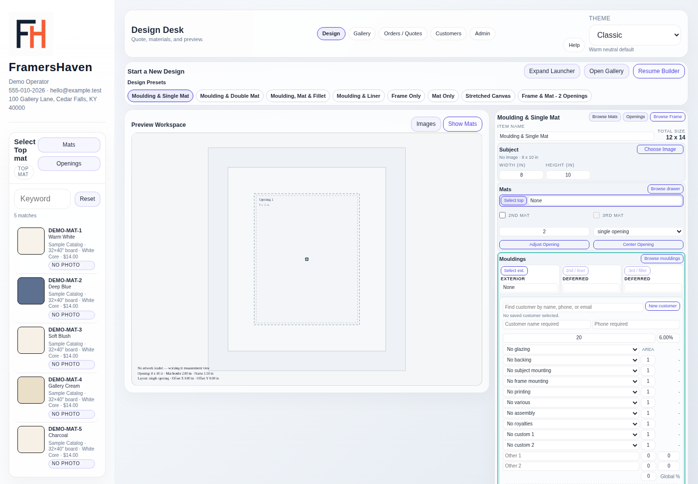
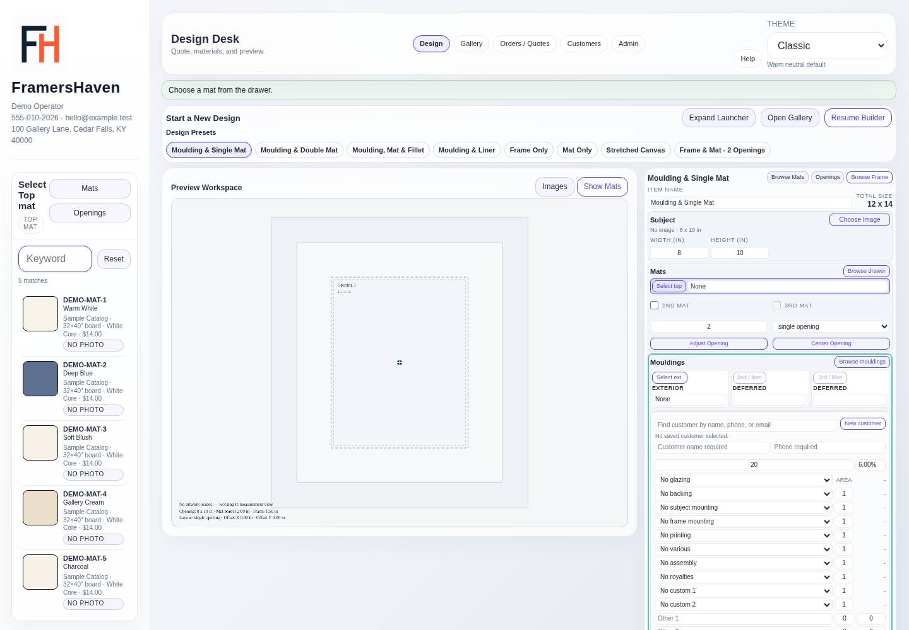

Build and price the job
Design Workspace
The mockup is the main visual check. The compact worksheet holds customer details, dimensions, materials, services, discounts, totals, and quote actions.
Build a quote
- Bring in artwork. Use a saved Gallery image so the recorded physical size and crop rectangle carry into the design.
- Confirm the customer. Select or enter the customer. A real name and phone number are required before the quote can be saved.
- Set the framing geometry. Confirm artwork size, mat border, opening layout, and any opening position or spacing adjustments.
- Choose materials. Select the exterior moulding, top mat, optional second and third mats, and glazing.
- Add service work. Choose backing, mounting, frame mounting, a priced Printing size, various, assembly, royalties, or custom rows as needed. Use Custom printing plus an Other row for a rare mixed print size.
- Calculate and review. Select Calculate Quote, check line items and totals, then save the quote.

Browse mouldings and mats
Open the catalog drawer
Use Select top, Select 2nd, Select 3rd, or Select ext. The side drawer shows the active slot and the full matching local catalog.
Check the selected state
Search by SKU or name, review preview images or swatches, then choose the row. The worksheet updates with a readable SKU and item name.
Backing, mounting, printing, assembly, and similar work are priced from Admin service rows, not from the moulding and mat browser.
Mat stack and openings
- The top mat is the main visible mat. A second or third mat adds a deeper layer with its own reveal.
- Mat pricing uses the outside board size, not only the internal opening.
- Single opening centers one opening. Multi-opening controls support the current window tools and templates.
- For multiple windows, use each row's Gallery button to assign saved artwork without opening the desktop file picker.
- Use Batch Selection to target specific windows for Align or Distribute. Leave it empty to target all windows.
- Use Undo and Redo for recent material, customer, opening, and quote-state edits.

Before saving
- Confirm customer name and phone number.
- Confirm artwork width and height are positive and match the physical piece.
- Review the mockup crop, material selections, opening layout, and service rows.
- Run Calculate Quote after the last design or pricing change.
- Global Discount fills the individual Discount % boxes. Adjust one box for a material or printing promotion; its value replaces the global discount for that line.
- Check subtotal, tax, total, and discounts before Save Quote.
Calculate again, then check the customer phone, dimensions, and pricing inputs. The app blocks incomplete quote records rather than saving a misleading job.